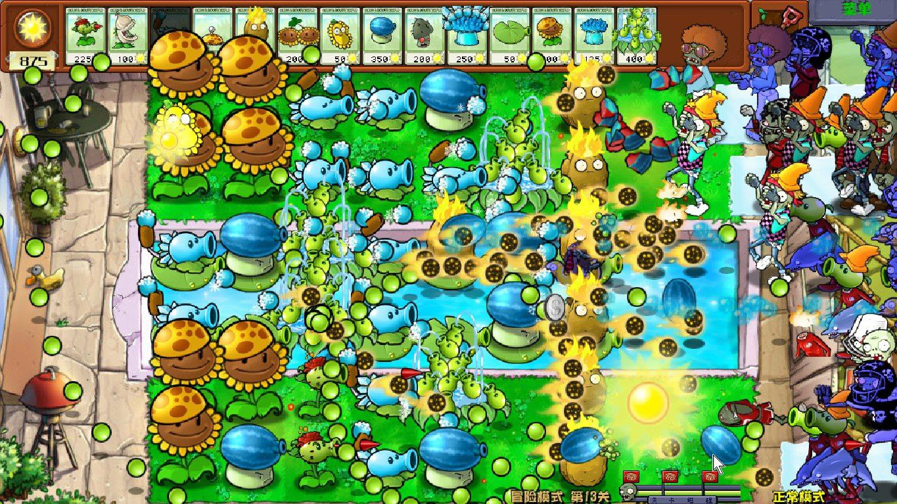

Hybrid mod
Plants vs. Zombies Hybrid - это модификация оригинальной игры Plants vs. Zombies, разработанная китайским игроком SubmarineWeiWeiPVZ.
Главная особенность мода - гибридные растения, сочетающие в себе свойства и способности двух или более исходных растений. Такое сочетание даёт им совершенно уникальные характеристики.
Другие особенности мода:
- Новые зомби в чужой броне;
- Зомби-гибриды, полученные путём слияния различных видов нежити;

Мод предлагает новый и сложный игровой процесс как для новичков, так и для опытных игроков.
Нажмите на кнопку с телеграмом чтобы скачать Hybrid Мод